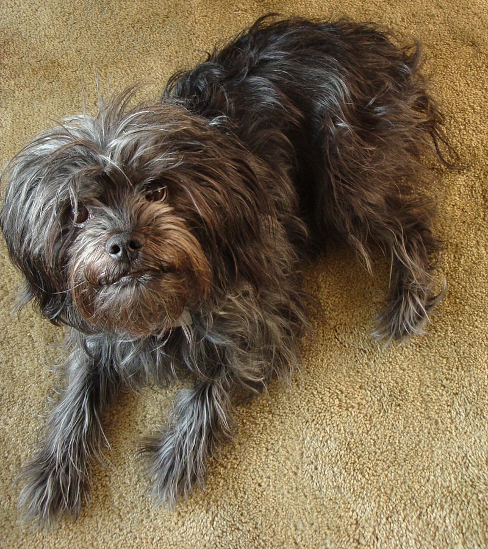

|
This dog has seriousness, intensity and humour bundled together. It looks like a cartoon but is an efficient rabbit tracker. It does not respond well to obedience training but is a good companion. It weighs about 3 kgs, and is about 25-30 cms tall. It is covered with coarse hair and sometimes called the "Monkey Dog". |
 |
Breeders' List
There are no breeders listed currently under this breed. If you anyone who any dog owner/ breeder having this breed, please tell them to get listed with us.